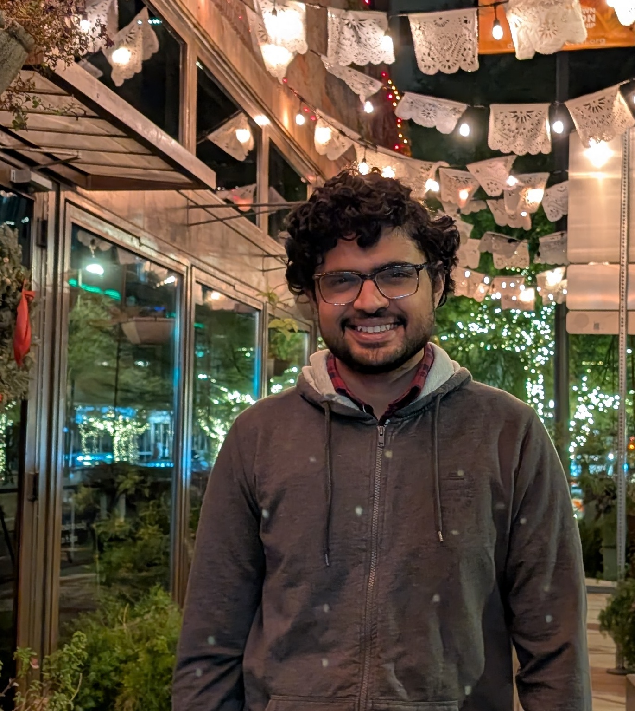

Aritra Gon
Royal Observatory
Blackford Hill
Edinburgh, EH9 3HJ
Email: agon@roe.ac.uk

Hi!
I am a postdoctoral researcher at the University of Edinburgh. My work focuses on the interface of the Cosmic Microwave Background and large-scale structure formation. I have worked on secondary temperature and polarisation anisotropies of the CMB.
I am currently developing new statistical frameworks to improve the extraction of cosmological information from existing galaxy survey data.